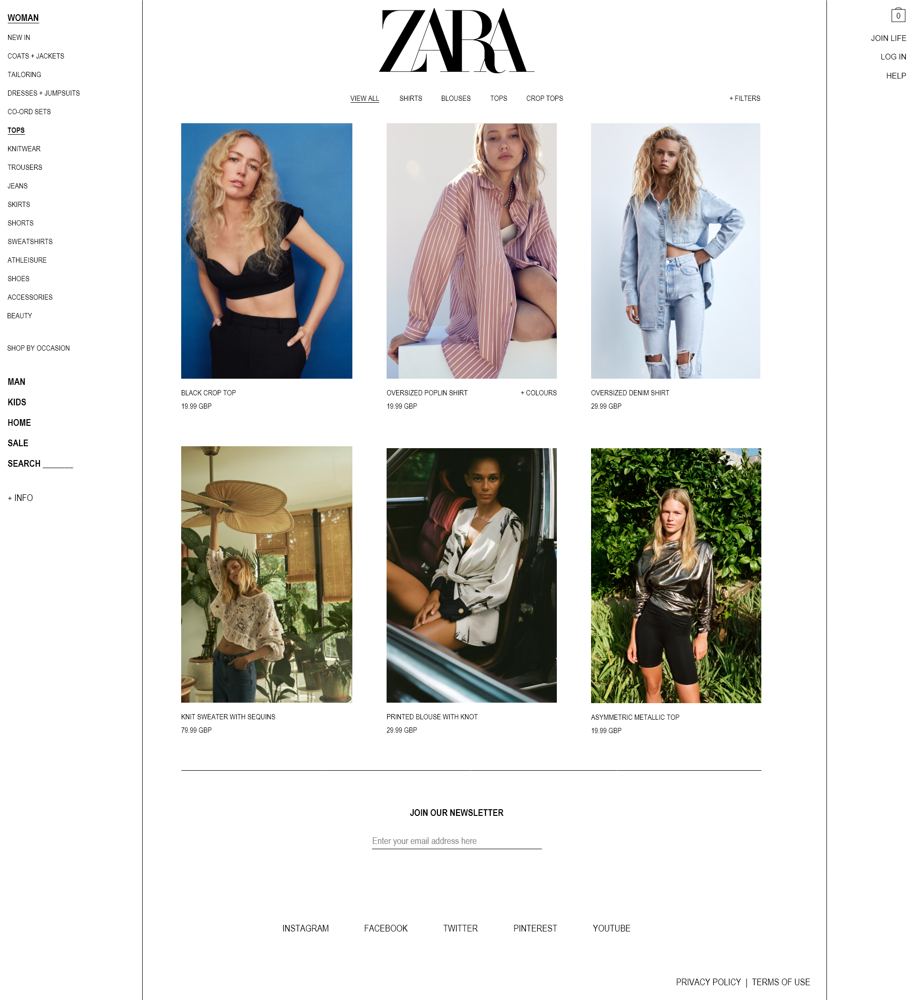
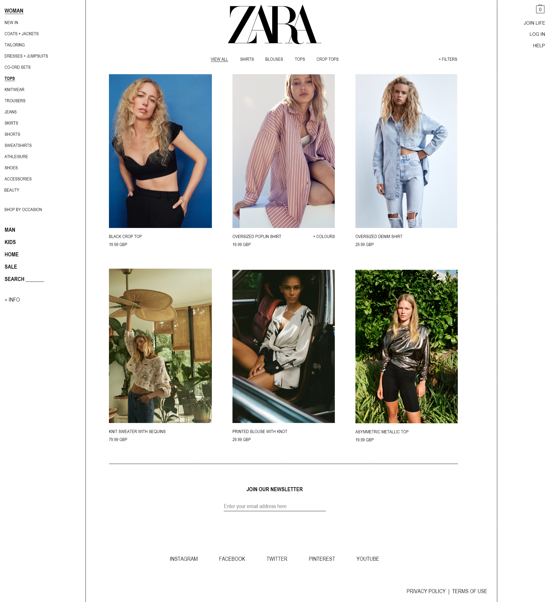

In 2020, everyone was forced to become more reliant on online shopping. It went from being a pleasant convenience, to a modern necessity. Because of this, I had noticed more and more people criticising the ZARA website and app. It had become a common joke to mention their negative experience with it, and I decided I wanted to find out exactly why people were feeling this way, and what the ZARA customers really wanted.
Next, I conducted usability testing. The most frequent negative comments were:
The most frequent positive comments were:
Afterwards, I asked the users to do some card sorting. I wanted to find out how they would structure the main menu on ZARA's website.
Then, I created user personas:
Finally, I sketched out some low-fidelity prototypes:
 
